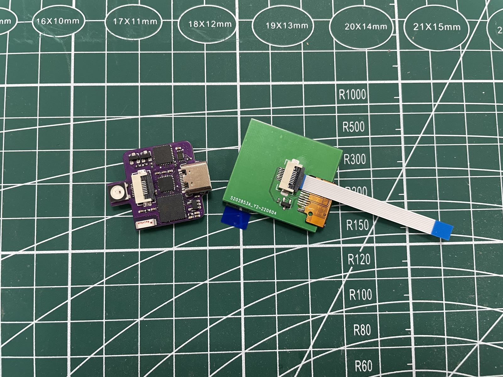

HoloCubic
A reproduction of Zhi Hui Jun's open-source HoloCubic — a pseudo-holographic desktop display. The image from a small LCD is reflected by a beam-splitter prism, so it appears to float inside the glass.

A reproduction of Zhi Hui Jun's open-source HoloCubic — a pseudo-holographic desktop display. The image from a small LCD is reflected by a beam-splitter prism, so it appears to float inside the glass.
